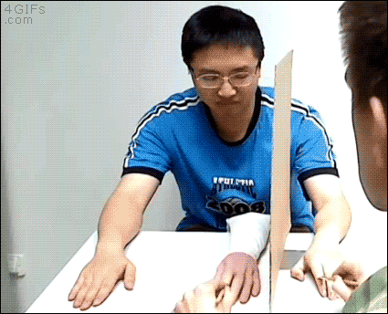

Facultad de Filosofía y Ciencias Humanas Universidad de la Sabana juan.espejo1@unisabana.edu.co
¿Podemos tener consciencia de nosotros mismos en tanto sujetos por medio de la percepción?
Parece que no podemos tener consciencia de nosotros mismos en tanto que sujetos por medio de la percepción.
Pero
si bien no es posible ver el ojo que ve, pues a lo sumo vemos el reflejo en el espejo, sí hay filósofos que señalan maneras en que somos perceptualmente conscientes de nosotros mismos en tanto que sujetos.
Leib / Körper
Creo que las herramientas conceptuales ofrecidas por Brian O'Shaughnessy, M. G. F. Martin y Matthew Soteriou —quienes han sido influenciados por la tradición fenomenológica y la wittgensteiniana pero no están atados por su vocabulario y las interpretan libremente— permiten desarrollar un marco general sobre la percepción que da sentido cómo un sujeto puede aparecer en la conciencia perceptual.
Hume y Wittgenstein parecen asumir que si el sujeto ha de aparecer en la experiencia perceptual entonces lo ha de hacer como uno de los objetos de la percepción, algo a lo que se llega sin inferencia cognitiva y qué está directamente presente en la conciencia perceptual. Pero la presencia de un sujeto como sujeto en la experiencia perceptual no puede ser caracterizada directamente en términos de los objetos y propiedades las cuales son el objeto de la relación perceptual en la que uno se encuentra. Esa búsqueda está condenada al fracaso; el sujeto como sujeto no puede ser encontrado en la consciencia perceptual, así como aparentemente lo buscan Hume y Wittgenstein
Si bien el sujeto no aparece como un objeto más de la percepción, el mobiliario del mundo y sus propiedades no son lo único de lo que podemos ser conscientes perceptualmente.
Me fascina la idea de que podemos ser conscientes perceptualmente de sujetos como límites, como delimitadores, así como lo sugiere Wittgenstein. Pero quiero explicar eso, no en el sentido metafísico del que habla el autor del Tractatus, sino de cómo el sujeto aparece como límite en la percepción.
Plan
Introducción general
Propiocepción
Atención conjunta
2 Propiocepción
El desafío en la propiocepción surge de una pregunta sobre la naturaleza de la percepción corporal y la aparente manera especial en la que uno experimenta su propio cuerpo "desde adentro".
Me explico.
Los casos ordinarios de conciencia corporal, como sentir dolor en el pie, implican lo que parece ser un sentido de pertenencia. Al sentir dolor, no solo tengo una sensación localizada en una parte del cuerpo, sino que me parece que está en una parte de MI cuerpo.
(Este es el tipo de conciencia que respalda los juicios de IEM sobre la postura del propio cuerpo. (CF Evans 1982.))
Las sensaciones corporales pueden sentirse como si estuvieran en una parte del cuerpo que uno realmente no tiene (como, por ejemplo, en un miembro fantasma o una mano de goma), pero se sienten como si estuvieran en una parte del cuerpo de uno.
El dolor en un miembro fantasma se percibe como un dolor en lo que parece ser la propia mano, incluso si no existe tal. Las cosquillas en una mano de goma se perciben en lo que parece ser la propia mano, incluso si es una mano de goma.
(Foto de Golan Levin)
¿Cómo podría diferenciar entre, por ejemplo, las experiencias táctiles de nuestro propio cuerpo y el tipo de experiencia perceptual que tenemos de nuestro propio cuerpo "desde adentro" que incluye este aparente sentido de pertenencia?
¿Cómo podría caracterizarse el carácter fenoménico de la pertenencia en términos de los objetos y propiedades que se están percibiendo? ¿Qué propiedad experimentada equivaldría a una experiencia de pertenencia del cuerpo? ¿Debería el relacionalista comprometerse con la idea de que nuestro cuerpo tiene una cualidad metafísica especial que explique la pertenencia?
Pertenencia
Siguiendo a Martin (1992, 1993, 1995), el relacionalista podría decir que en la medida en que hay conciencia corporal en coordenadas espaciales distintas, ya hay un sentido del propio cuerpo. Que una sensación se sienta en una ubicación particular ya es sentirse como si fuera el propio cuerpo.
"What marks out a felt limb as one's own is not some special quality that it has, but simply that one feels it in this way." (Martin 1992: 201)
Propuesta
El cuerpo en el que se sienten sensaciones se siente como el propio cuerpo
Uno puede argumentar en contra de la postura relacionalista de la pertenencia corporal diciendo que no existe tal conciencia de pertenencia:
P
uede haber conciencia del propio cuerpo sobre la base de la cual uno podría juzgar que es nuestro propio cuerpo, pero no hay un verdadero sentido de pertenencia
No discutiré esta forma de eliminativismo sobre el sentido de pertenencia.
Las consideraciones en contra de la visión relacional de la pertenencia corporal que SÍ deseo examinar son las presentadas por Frédérique de Vignemont en su libro Mind the Body (2018).
Dos tipos de casos utilizados por De Vignemont en contra de la visión relacionalista de la pertenencia corporal:
Sensaciones referidas: casos de uso de herramientas donde es posible que un sujeto sienta sensaciones en herramientas de manera no metafórica sin tener un sentido de pertenencia de la herramienta como parte de su cuerpo.
Somatoparafrenia: casos de pacientes que sufren una patología que pueden experimentar sensaciones corporales en una parte del cuerpo sin experimentar esa parte de su cuerpo como propia.
Sensaciones referidas
"So, further, does the woodcutter feel, along with the axe’s reaction against his hand, its hissing cleaving of the wood; so does the soldier feel his weapon piercing the flesh of his antagonist." (Lotze, 1888, pp. 588–9, quoted by De Vignemont 36)
La incorporación de herramientas en algunas representaciones corporales (Martel et al., 2016) muestra que puede haber algunos casos en los que una herramienta podría extender el sentido del propio cuerpo y, sin embargo, no venir con la conciencia de la herramienta como propia, como, por ejemplo, hay tal conciencia en el caso de la ilusión de la mano de goma.
El soldado no siente conscientemente su arma como su propio cuerpo de la misma manera consciente en la que podría sentir una mano de goma en el entorno experimental adecuado.

En el uso de herramientas, De Vignemont afirma que una sensación puede sentirse en una herramienta y no venir con la conciencia de la herramienta como el propio cuerpo. ¿Está la visión relacional en problemas?
No, si reflexionamos sobre las formas en que nuestra conciencia sensorial podría extenderse.
No es claro que las extensiones de los sentidos funcionen exactamente como el sentido regular, no extendido. Una extensión puede alterar el carácter especial de nuestra sensación y el sentido de pertenencia podría perderse. Este fallo en transportar el carácter completo ocurre mucho en uno de los casos más interesantes de extensión de los sentidos: la sustitución sensorial.
Los sujetos que usan un dispositivo de Sustitución Sensorial Visual Táctil o Sustitución Sensorial Visual Auditiva extienden sus capacidades visuales al usar el sentido del tacto o del oído en la medida en que el dispositivo toma entrada a través de una cámara y produce la salida relevante. (Paul Bach-y-Rita y otros)
¿Extender?
Sí. Sus reportes perceptuales parecen apoyar la idea de que pueden ver ya que reconocen una variedad de objetos ordinarios, los señalan en el espacio e incluso indican su tamaño absoluto y distancia del sujeto. Algunos incluso informan tener una percepción 3D del entorno. ¡Gran parte de lo que la visión ordinaria nos ofrece!
Y sin embargo, los sujetos que usan estos dispositivos parecen carecer de una característica básica de la experiencia visual: no perciben colores, algo que parece imposible en la visión normal.
La sustitución sensorial sugiere que, incluso si el uso de herramientas extiende nuestra capacidad de tener sensaciones corporales, no hay razón para creer que las sensaciones corporales tendrán la misma naturaleza fundamental que las sensaciones sentidas en nuestro cuerpo, es decir, no hay razón para esperar que incluyan un sentido de pertenencia.
¿Es el sentido de pertenencia una cualidad de la sensación corporal más allá de sus propiedades espaciales?
La evidencia de sensaciones referidas en herramientas no decide a favor de la respuesta de De Vignemont.
Somatoparafrenia
Many [patients] can still feel pain and even cry out if the examiner pinches their “alien” hand (Melzack, 1990). For instance, one patient asked his doctor:
P: I still have the acute pain where the prosthesis is.
E: Which prosthesis?
P: Don’t you see? This thing here (indicating his left arm). The doctors have attached this tool to my body in order to help me to move [...] Once home could I ask my wife, from time to time, to remove this left arm and put it in the cupboard for a few hours in order to have some relief from pain? (Maravita, 2008, p. 102). Algunas experiencias de dolor de pacientes con somatoparafrenia, también conocida como asomatognosia o síndrome de la mano ajena, supuestamente presentan un contraejemplo a la postura relacionalista de la pertenencia corporal ya que parecen constituir casos de sensación corporal en el propio cuerpo sin un sentido de que sea propio, es decir, casos de sensación sin pertenencia.
¡¡¡Parecen sentir dolor como si estuviera en el cuerpo de otra persona!!!
Los sujetos son conscientes de que sienten dolor en una parte del cuerpo, pero no son conscientes de que ese dolor esté en su propio cuerpo. Algunos reportan sentir dolor en una prótesis; otros reportan sentir dolor en una parte del cuerpo de un familiar o del examinador. Es un dolor que tienen en una parte del cuerpo que no sienten como propia.
¿Cómo responder?
La evidencia no muestra sensación corporal con carácter espacial completo.
Me explico.
Para ver la naturaleza incompleta del carácter espacial de tales experiencias, necesitamos distinguir dos aspectos de la conciencia espacial corporal.
Porque aunque los pacientes que sufren de somatoparafrenia tienen alguna conciencia de las propiedades espaciales de sus sensaciones corporales, carecen de conciencia de otras propiedades espaciales.
En casos ordinarios, no hay duda sobre por qué una experiencia corporal se percibe dentro de ciertos límites. En estos casos, hay un sentido de que los límites de la experiencia corporal son los del cuerpo sentido; límites no solo sentidos como siendo los mismos del cuerpo sentido, sino más bien constituidos por él.
Uno percibe los límites de la posible experiencia en la medida en que hay un sentido en el que los límites están establecidos por el propio cuerpo.
Así, en casos ordinarios, tenemos un sentido espacial de la ubicación de la sensación pero también de los límites dentro de los cuales esas sensaciones podrían ser sentidas.
En el caso de la somatoparafrenia, los sujetos carecen de un sentido de los límites posibles de la sensación: no hay sentido de por qué la sensación se siente en un lugar particular y no, por ejemplo, a tres metros de distancia.
Los sujetos pueden sentir dolor en una ubicación determinada por la región en el espacio ocupada por su cuerpo, pero no lo perciben como tal.
Es un caso donde la estructura espacial de sus sensaciones corporales está vinculada al cuerpo sentido, pero no se presenta como tal, dejando espacio para la confabulación sobre a quién le pertenece ("es una prótesis", "es de mi sobrina").
¿Entonces?
Uno podría pensar que los casos de dolores en una mano ajena no son sensaciones corporales genuinas (como los casos de sensaciones referidas).
Mejor: pienso que se entienden como casos en los que los sujetos tienen una limitación en su sentido espacial que explica su falta de pertenencia.
La conciencia corporal ordinaria es la conciencia de una sensación en una región del espacio que se percibe como parte de un espacio más amplio determinado por el propio cuerpo.
Los pacientes con somatoparafrenia pueden tener conciencia de una sensación en una región del espacio (un brazo), pero este espacio no se percibe como parte de un espacio más amplio determinado por su propio cuerpo.
Su sentido de su cuerpo es parcial, ya que no tienen un sentido de los límites de la posible sensación; carecen de una forma de consciencia de sí.
3 Atención conjunta
Un padre y su hija construyen una torre con bloques de madera. Atienden a los bloques, a la torre y son mutuamente conscientes de su atención. Este es un caso de atención conjunta.
La atención conjunta es un acontecimiento mental en donde dos (o más) sujetos atienden a lo mismo y esto se les manifiesta, de alguna manera, a estos sujetos.
¿Cómo se debe entender la forma en que se manifiesta ese otro?
Cuando reflexionamos sobre nuestra experiencia singular, parece que encontramos a los objetos mismos. Y esto ofrece una primera motivación para pensar que la experiencia misma está constituida (al menos parcialmente) por los objetos y sus propieades.
Pero el co-perceptor no aparece como un objeto más en la escena.
En el caso de la visión: no es que el co-perceptor aparezca en mi experiencia visual conjunta como un objeto en el rabillo del ojo. (¡Aparecería como un objeto más y no como co-perceptor!)
Primera versión de la sugerencia: En la atención conjunta, el co-perceptor no aparece como un objeto más sino que aparece de una manera parecida a la del sujeto.
He sugerido que el co-perceptor aparece de una manera similar a como aparece el sujeto en la experiencia. Pero esto no ayuda si no tenemos una mejor idea de la forma en que el sujeto aparece en su experiencia.
¿Pero cómo es que yo, como sujeto, aparezco en mi consciencia del mundo? Voy a tomar casos de percepción visual.
El sujeto no aparece en la experiencia visual como un objeto más.
"Nunca puedo atraparme a mí mismo en ningún caso sin una percepción, y nunca puedo observar otra cosa que la percepción." David Hume, TLP,libro I, parte IV, sección VI
Y sin embargo, hay instancias en que hago juicios sobre mí mismo, como el sujeto perceptual, con base en la experiencia visual.
Así como hacemos juicios con base en la experiencia sobre la posición espacial relativa de dos objetos que se nos presentan (X está frente a Y), también hacemos juicios con base en la experiencia sobre nuestra propia posición relativa a otros objetos que se nos presentan (Yo estoy frente a X).
En palabras de Evans: "queremos permitir, de la misma forma, que un sujeto puede saber que está enfrente de una casa simplemente por percibir una casa. Por supuesto, lo que percibe no consta de ningún elemento que corresponda a “yo” en el juicio “Estoy enfrente de una casa”: simplemente es consciente de una casa. Pero si queremos interpretar que un juicio hecho sobre esta base tiene el contenido “Yo estoy enfrente de una casa”, debemos tener una razón para suponer que el sujeto considera que él mismo reconoce la existencia del estado de cosas precisamente de la misma clase que se da cuando, por ejemplo, hay un coche enfrente de una casa." Evans, Variedades de la referencia, p. 228
Aunque el sujeto perceptual no aparece como un objeto en su experiencia de la casa, esta justifica juicios sobre sí mismo como sujeto perceptual.
¿Cómo? La respuesta más sencilla (ingenua, dirían algunos) es que el sujeto se presenta a sí mismo en esa experiencia. Pero de nuevo queda la pregunta: ¿Cómo se presenta a sí mismo el sujeto en la experiencia? (Mike Martin y Matt Soteriou nos ayudarán.)
Con este fin, introduciré una discusión sobre la forma en que hay más aspectos en la experiencia perceptual visual que la consciencia de objetos y sus propiedades.
Veamos la siguiente cita de Martin:
So we can think of normal visual experience as experience not only of objects which are located in some space, but as of a space within which they are located. The space is part of the experience in as much as one is aware of the region as a potential location for objects of vision. This is not to say that one can actually experience all sub-regions of a visual space at one time - the fronts of objects obscure their backs, objects occlude each other ...
The occluded areas of the visual scene count as part of visual space in the sense that one could come to be aware of something at that location without altering the limits of the visual field provided by the angle of vision at that time. An area can come into view simply by a re-arrangement of things within the field, rather than by changing the field itself. (Martin, p 192)
Podemos entonces darle sentido a la idea de que en la experiencia visual estamos conscientes de los objetos y sus propiedades y también de una región espacial.
Pero la forma en que somos conscientes de los objetos y sus propiedades no es la misma en que somos conscientes del espacio. Los objetos y sus propiedades se experimentan directamente a la consciencia pero la región espacial se presenta sólo en la medida en que hay o potencialmente habría objetos.
En palabras de Soteriou:
"the conscious character of a normal visual experience is not solely determined by the sorts of objects and events one is apparently aware of in having that experience. For it is also determined, in part, by the way in which one’s visual awareness of those objects and events seems to be structured" (Soteriou 2013,pp. 117-18)
Entonces cuando Martin dice que en la experiencia visual uno puede estar consciente de regiones del espacio en donde nada es experimentado pero donde algo podría estar potencialmente, tenemos ahí una afirmación sobre la forma en que nuestra experiencia está espacialmente estructurada.
Y al reflexionar sobre la estructura espacial de la experiencia visual, podemos apreciar que tenemos un sentido de que vemos una parte del mundo que no sólo depende de cómo es el mundo sino que también está determinada por nuestras propias capacidades y limitaciones sensoriales.
Al mirar hacia el frente puedo ser consciente de cómo mi actual experiencia está limitada, que hay un espacio más allá de lo que veo y del que podría tener experiencia directa si cambiara mi punto de vista.
Podemos diferenciar entonces tres casos:
La experiencia de un objeto en el espacio. (La experiencia consciente de una silla)
La experiencia de una ausencia de objetos. (la experiencia consciente del espacio entre estas dos filas de sillas).
La ausencia de experiencia. (La relación en la que estoy con el espacio detrás de mi cabeza.)
No es lo mismo experimentar un espacio vacío que no experimentar nada. La diferencia consiste en al experimentar un vacío tenemos una experiencia de nosotros mismos, de nuestros límites sensoriales, mientras que en el segundo no tenemos una experiencia alguna.
Así, en la experiencia visual tenemos consciencia de objetos y sus propiedades. Pero también de nosotros mismos en la medida que tenemos consciencia de nuestras capacidades perceptuales.
Tenemos experiencia de los objetos sensoriales y tenemos experiencia de los límites de nuestro campo sensorial –donde la forma en que tenemos experiencia de esos límites no es la misma forma en que tenemos experiencia de los objetos y sus propiedades.Esta forma de consciencia de mis límites hace al menos parte de la forma en que yo como sujeto aparezco para mí mismo en mi experiencia visual del mundo.¿Y qué tiene que ver esto con la atención conjunta?
Segunda versión de la sugerencia: En la atención conjunta, el co-perceptor aparece como otro sujeto que está determinado los límites de mi experiencia.
El co-perceptor se manifiesta en la atención conjunta como otro sujeto, como una segunda persona. No como otro objeto más en la experiencia, sino, al menos, como parte de lo que limita mi atención conjunta.
Al reflexionar sobre la estructura espacial de la atención conjunta, podemos apreciar que tenemos consciencia de que vemos un espacio del mundo determinado por nuestras propias limitaciones y las de nuestro co-perceptor
Al atender a un objeto junto con otro, soy consciente de cómo mi actual experiencia de un objeto está enmarcada en un espacio que responde no sólo a mis limitaciones sensoriales sino a cómo esas limitaciones encajan también con las limitaciones de un otro sujeto con quien estoy en atención conjunta.
La atención conjunta es un acontecimiento mental en donde dos (o más) sujetos atienden a lo mismo y esto se les manifiesta, de alguna manera, a estos sujetos.
¿Cómo se debe entender la forma en que se manifiesta?
El co-perceptor aparece como otro sujeto que está determinando los límites de mi experiencia.
La estructura misma de la atención conjunta, sus límites y alcances, está determinada por los sujetos que tienen esta experiencia y la consciencia mútua y es en la consciencia de esos límites que aparece el co-perceptor para cada perceptor.
¡Gracias!
Juan-Camilo Espejo-Serna Facultad de Filosofía y Ciencias Humanas Universidad de La Sabana juan.espejo1@unisabana.edu.co